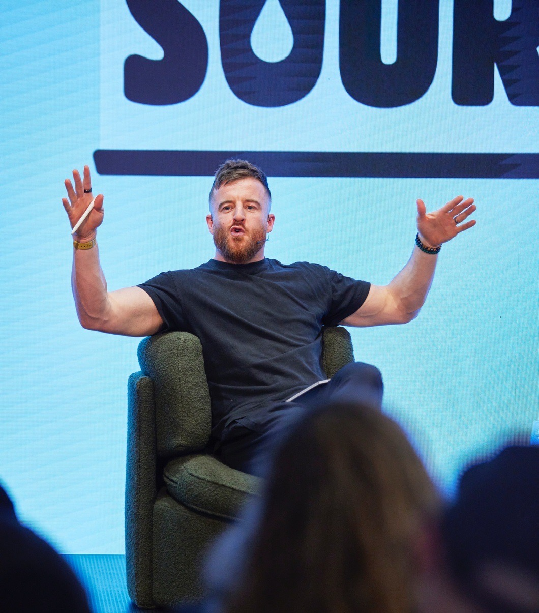
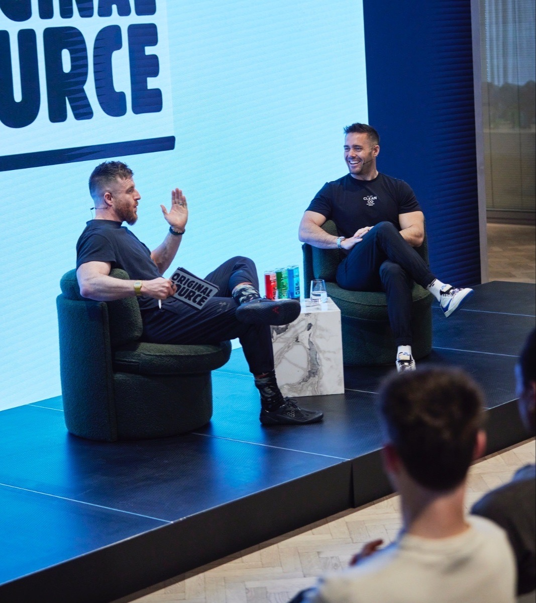
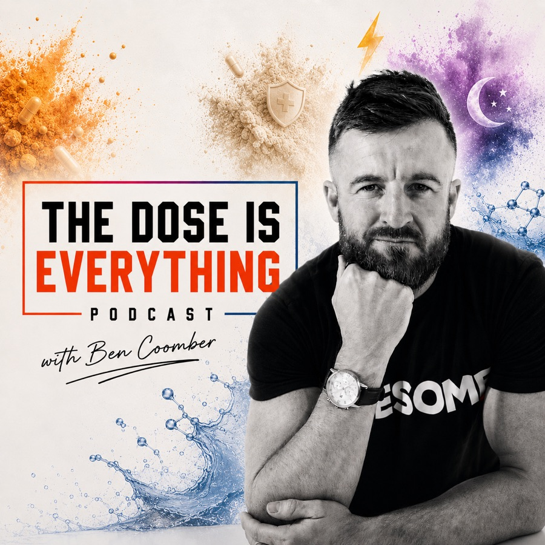

Public speaking
“I am in my element on stage teaching, inspiring, and moving an audience.” Ben speaks on optimal human performance, for all walks of life.
- Keynotes and talks
- Event host
- Panellist at industry events
Speaking & media
“I have headlined on over 100 stages for the likes of M&S, Sky, O2 & Global Media. I powerfully move a room.”

Three ways to book Ben
“I am in my element on stage teaching, inspiring, and moving an audience.” Ben speaks on optimal human performance, for all walks of life.
“My goal as a podcast guest? To be inspiring, educational & thought provoking.” Ben has done over 200 podcasts as a guest.
“With over 10 years acting training before I became a coach, I combine many skills to teach & inspire on screen.”
Audiences
Stages and rooms
And at many major UK events and festivals, over 100 now.

What Ben is like on stage
“Being on stage is about the energy you bring, the conversations you can hold, and words you can deliver to move the room. I promise to do just that, whether as an event host like I did with Original Source and Spencer Matthews, as a podcast guest, or as a panellist at an industry event.”
Previous jobs
Over the last 14 years as a speaker, podcaster and host, Ben has done countless talks, workshops, panels and shows. Here are some of the previous jobs, to give you an idea of what he can do for your event or company.
This is just a small snapshot of Ben's media and speaking work. Get in touch to hear more, or to talk about your project.
From the people who booked him
“Ben spoke in our DENT KPI mastermind because I respect his skills and expertise as a high performance coach. Building both a thriving business, strong body, and resilient mind. He blew away our audience.”
“Ben's story is phenomenal and inspiring. On our podcast we discussed business, optimal human performance, how to achieve true work life balance, and more. We can't wait to have him back.”

Ben's own show
Launched in 2012. “Every day I get messages saying, Ben, this podcast has changed my life. Perhaps it can help change yours.”
Bring Ben to your stage, your podcast or your screen.